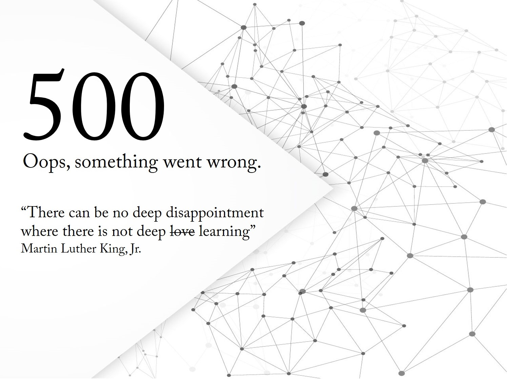

Optical Character Recognition

{answer}
Save To File
Translate to
English
Language1
Language2
Language3
Language4
Language5
Language6
Language7
Language8
Language9
Language10
Language11
Net Surety - Avg.
"Net Surety" means just how sure the neural network is about every character.
Net Surety - Med.